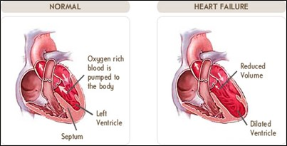
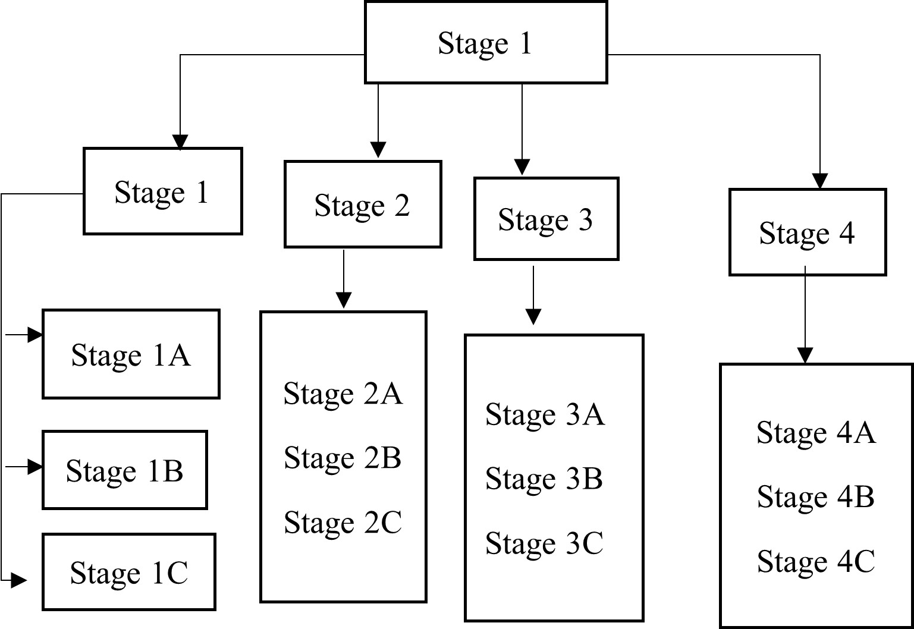

Cardiovascular Disease (CVD) is kind of illness that makes our heart function abnormally. It is usually accompanying with the issue in blockage of blood vessel. Therefore, the flow circuit of our blood from heart to other part of body will be misfunctioned. It was not only affecting the function of heart but also the other important part in our body such as brain. When this disorders conditions getting more serious, it will cause someone death.  CVD was reported as ‘Top 1 killer’ in the worldwide human society. In 2016, World Health Organization (WHO) recorded an estimation of people worldwide who death due to Cardiovascular Diseases is about 17.9 million people. This number is stands for 31% of the death around the whole world. (World Health Organization WHO, 2017). As one of the roots for Cardiovascular Diseases, Heart Disease was the main cause of death and it was in the first place compare to other causes for 20 years. In 2019, 9 million of people or 16% of total death are due to this heart disease. (World Health Organization WHO, 2020).
Diabetes mellitus is metabolic disease that causes by the lacks and imperfection in insulin secretion or action in which means that the body cannot make sufficient insulin or either unable to use the insulin that it produced (D. Mellitus, 2005). The disease affected tissues and vascular damage which leading to serious diabetic complications and a wide range of heterogeneous disease such as retinopathy, neuropathym, nephropathy, cardiovascular complications and ulceration (A. Bastaki, 2005). Complications from diabetes would result in increasing disability, reduced life expectancy as well as huge health cost (D. Atlas, 2015).
It is a disease of autoimmune which attacks and destroys the cells in pancreas causing the loss of insulin production. Although the exact factor that triggers the diseases remain unknown, it is generally known that the immune system in the body mistakenly attacks and destroy the cells that produce the insulin in the pancreas which leaves the body lacks insulin and resulted on sugar builds up the bloodstream. The Symptoms are abnormal hunger and thirst, weight loss, increased urination, and blurry vision and tiredness.
It happens when the pancreas fails to make adequate amount insulin to overcome the resistance the body have to insulin in which causes the sugar to build up in the bloodstream. Type 2 diabetes is always related with overweight, although not all of the bearers are overweight which cause the insulin resistance and resulted to raise blood sugar levels. Strong inheritable genetic links exist in which having family especially with the first degree of type 2 diabetes increases the risks of having the disease substantially (A. B. Olokoba, O.A. Obateru & L. B. Olokoba, 2012). The symptoms are abnormal hunger and extreme thirst, recurring urination, blurry vision, fatigue, and sores that are slow to heal.
It occurs during pregnancy where the blood sugar level of the person high during the period in which causes by the insulin blocking the hormones produced by placenta. Individuals with this disease may have increased the risk for perinatal mortality and morbidity and also the risk for the later production of diabetes as well as other cardiovascular disease (D. R. Coustan, 1995). The symptoms are increased thirst, increased urinating, dry mouth, tiredness and blurry vision, fatigue, and vaginal, bladder and skin infections.
Gynecology cancer is a cancer that start in a woman’s reproductive organs. Organ involved are vagina, uterus, fallopian tubes, and ovaries. Gynecologic cancers will begin in different places within a woman’s pelvis, which is the area below the stomach and in between the hip bones. Each year, hundreds of thousands of women undergo potentially sterilizing chemotherapy and radical surgery for the treatment of cancers. Of these, many will be diagnosed with a gynecologic cancer of the fourth most common cancer among women. Three main type of Gynecology is as follow.
This cancer begins in the cervix, which is the lower, narrow end of the uterus. (The uterus is also called the womb.) In Malaysia this cancer has caused about 12.9% of all female cancers (an age standardized incidence rate of 19.7 per 100,000) in Malaysia. This was higher than other Asian and Western countries, and even globally (National Cancer Registry, 2003). Deaths from cervical cancer are rare amongst young women but its incidence increased from the age of 30 years and peaked at 60-69 years. Half (54.7%) of the cases involved women ages 40-59 years. Incidence rates were, in general, highest among Chinese women (28.8/100,000), followed by Indians (22.4/100,000) and the lowest amongst the Malays (10.5/100,000)
Ovarian cancer begins in the ovaries, which are located on each side of the uterus. Ovarian cancer have four types of stage which is:  When an individual has Stage 1 ovarian cancer, it means the cancer has been found in one or both ovaries. 15% of girls with ovarian cancer are diagnosed with Stage 1. For a stage 1A the cancer commonly be found inside a single ovary. For the stage 1B highly found inside both of ovaries. Following the Stage 1C, the cancer can be found inside one or both ovaries and also one of this discover of it to be found on the outside surface of one or both ovaries or the capsule (outer covering) of the ovary has ruptured (broken open) or cancer cells are found within the fluid of the greater peritoneal sac (the body cavity that contains most of the organs within the abdomen) or in washings of the peritoneum (tissue lining the peritoneal cavity). Most women diagnosed with Stage 2 ovarian cancer have a five-year survival rate of roughly 70%. Survival rates are often supported studies of huge numbers of individuals, but they can’t predict what is going to happen in any particular person’s case. Other factors impact a woman’s prognosis, including her general health, the grade of the cancer, and the way well the cancer responds to treatment. For stage 2 is 70%, stage 2A is 78%, 2B is 73% and last 2C is 57% which is lowest than others stage 2. For others stage are all same with lower rate of survive than stage one.
This type of cancer begins in the uterus, the pear-shaped organ in a woman’s pelvis where the baby grows when she is pregnant. The uterus is important to support development of fetal during pregnancy. The uterus is formed like an upside-down pear; the highest is that the fundus, the center is that the corpus, and bottom is that the cervix; the inner layer of the uterus is the endometrium, and therefore the outer layer is muscle (myometrium). Uterine cancer is that the abnormal (malignant) growth of any cells that comprise uterine tissue. The buildup of cancer cells may form a mass (malignant tumor). Non-cancer cells that form a mass are termed benign tumors. Although the precise causes of uterine cancers aren't known, risk factors include women with endometrial overgrowth (hyperplasia), obesity, women who haven't had children, menses beginning before age 12, around age of 55 and above would have high possible for menopause, estrogen therapy, taking tamoxifen, radiation to the pelvis, case history of uterine cancer, and Lynch syndrome (most commonly seen as a sort of inherited colorectal cancer).
Anxiety is a feeling we all experience in threatening or difficult situations. Anxiety serves to prepare us physiologically and psychologically to face the challenges of daily life and to respond to life-threatening situations (Medical Hypnosis Malaysia, 2020). On the other hand, phobia is a marked anxiety about a particular object or situation while panic disorders refer to sudden surge of fear or discomfort associated with various somatic such as palpitations, sweating, trembling, chest pain, and shortness of breath, and mental symptoms such as deregulation, depersonalization, or fear of losing control (Medical Hypnosis Malaysia, 2020).
Stress is defined as the threat of the body’s homeostasis by external or internal stress or when environmental demands exceed one’s ability to adapt (Medical Hypnosis Malaysia, 2020). Stress management according to Medical Hypnosis Malaysia includes mindset changing regarding stress, learn how to relax and coping with stress inducing situations effectively.
Trauma as a result of accidents, natural disasters, violence, physical assaults, child abuse, sexual violence, and other traumatic events, such as potentially life-threatening medical conditions (Medical Hypnosis Malaysia, 2020). Post-Traumatic stress is due to the problematic mental health that triggered by terrifying events whether he is experiencing or witnessing it.